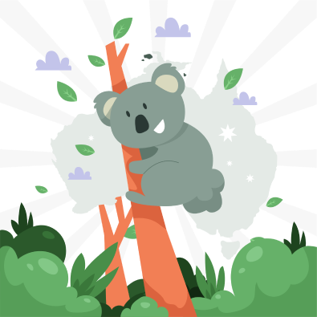
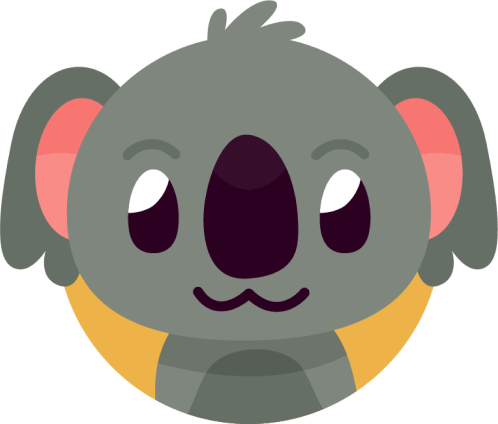
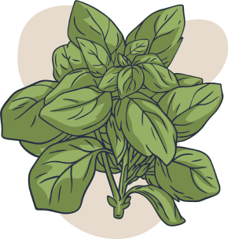

Es conocido por su aspecto tierno y su estilo de vida relajado, es un habitante único de las regiones arbóreas de Australia.
Hábitat: Son nativos de Australia y se encuentran principalmente en las regiones boscosas y eucaliptales.



Dieta: Son herbívoros y se alimentan principalmente de hojas de eucalipto.
Características Físicas: Tienen un pelaje gris y suave que les ayuda a camuflarse, orejas grandes y garras fuertes para trepar.